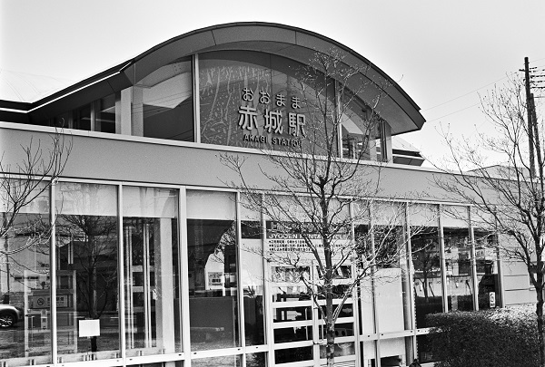

JMT18_上毛鉄道 上毛線 TI57_東武桐生線
JMT18_赤城駅 Akagi
東新川駅
←← 上毛鉄道 上毛線 →→
桐生球場前駅
相生駅
←← 東武鉄道 桐生線

2018/4 PentaxLX ﾌﾟﾗﾅｰ50mm ｱｸﾛｽ
2018/4 PentaxLX ﾌﾟﾗﾅｰ50mm ｱｸﾛｽ
2018/4 PentaxLX ﾌﾟﾗﾅｰ50mm ｱｸﾛｽ
2018/4 PentaxLX ﾌﾟﾗﾅｰ50mm ｱｸﾛｽ
2018/4 PentaxLX ﾌﾟﾗﾅｰ50mm ｱｸﾛｽ
2018/4 DP1
戻る
ﾎｰﾑ